002 · RL PURPLE · COMPLETE PRODUCTION RECORD
A Long Afternoon in Seongbuk
2027년 봄, 성북동의 오래된 집에서 한 가족과 오랜 친구가 보내는 오후를 가정한 이미지 연구입니다. 이 페이지에서는 결과만 보여주지 않습니다. 전체 이미지 25장, GPT와 Gemini의 차이, 실제 프롬프트, 수정 이유와 남은 문제를 처음 보는 사람도 이해할 수 있게 설명합니다.
002 · RL PURPLE · COMPLETE PRODUCTION RECORD
2027년 봄, 성북동의 오래된 집에서 한 가족과 오랜 친구가 보내는 오후를 가정한 이미지 연구입니다. 이 페이지에서는 결과만 보여주지 않습니다. 전체 이미지 25장, GPT와 Gemini의 차이, 실제 프롬프트, 수정 이유와 남은 문제를 처음 보는 사람도 이해할 수 있게 설명합니다.
처음에는 ‘한국의 로열 패밀리’를 권위, 계승, 질서로 표현했습니다. 결과는 고급스러웠지만 사람들이 굳어 있었고 공간은 3D 인테리어처럼 보였습니다. 실제 참조 사진을 다시 읽은 뒤, 로열의 의미를 신분이 아니라 오래 지켜온 기준과 관계로 바꿨습니다.
저장 파일은 33개지만, 후보를 선정 폴더에 그대로 복사한 파일 8개가 있습니다. 아래에는 같은 이미지를 반복하지 않고 서로 다른 렌더 25장을 모두 표시합니다. 파란 표시는 GPT, 보라 표시는 Gemini입니다.
GPT TRACK · 15 UNIQUE IMAGES
초기 4장부터 포즈와 여백 수정, 성북동 실사 전환, S6 반복 수정까지 시간 순서로 배열했습니다.
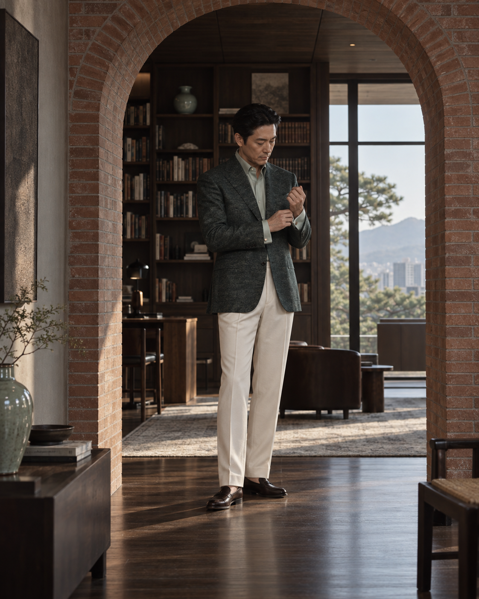
붉은 벽돌 아치와 전신 수트로 절제된 권위를 만들려 했습니다. 인물이 방 한가운데 정지해 있고 실내가 지나치게 완벽해 광고 렌더처럼 보였습니다.
RL_PurpleLabel_Cut01_QuietCommand_original.png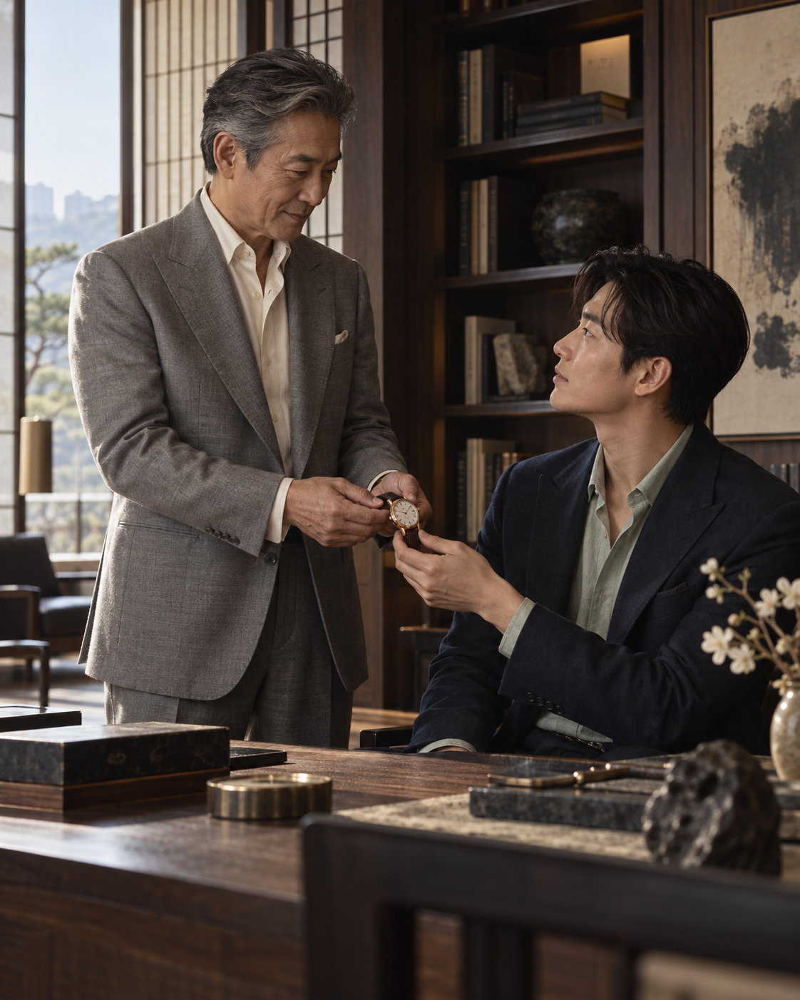
아버지와 아들이 시계를 함께 보는 계승 장면입니다. 이야기의 방향은 읽히지만 두 사람이 동시에 작은 물건을 다뤄 손의 역할이 복잡했습니다.
RL_PurpleLabel_Cut02_Inheritance_original.png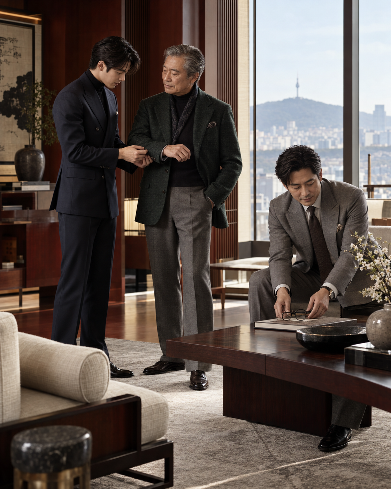
세 세대의 기준과 관계를 한 장에 담으려 했습니다. 인물, 소품, 건축이 모두 강조되어 복잡하고 세 사람은 함께 있어도 서로 연결되지 않았습니다.
RL_PurpleLabel_Cut03_HouseStandard_original.png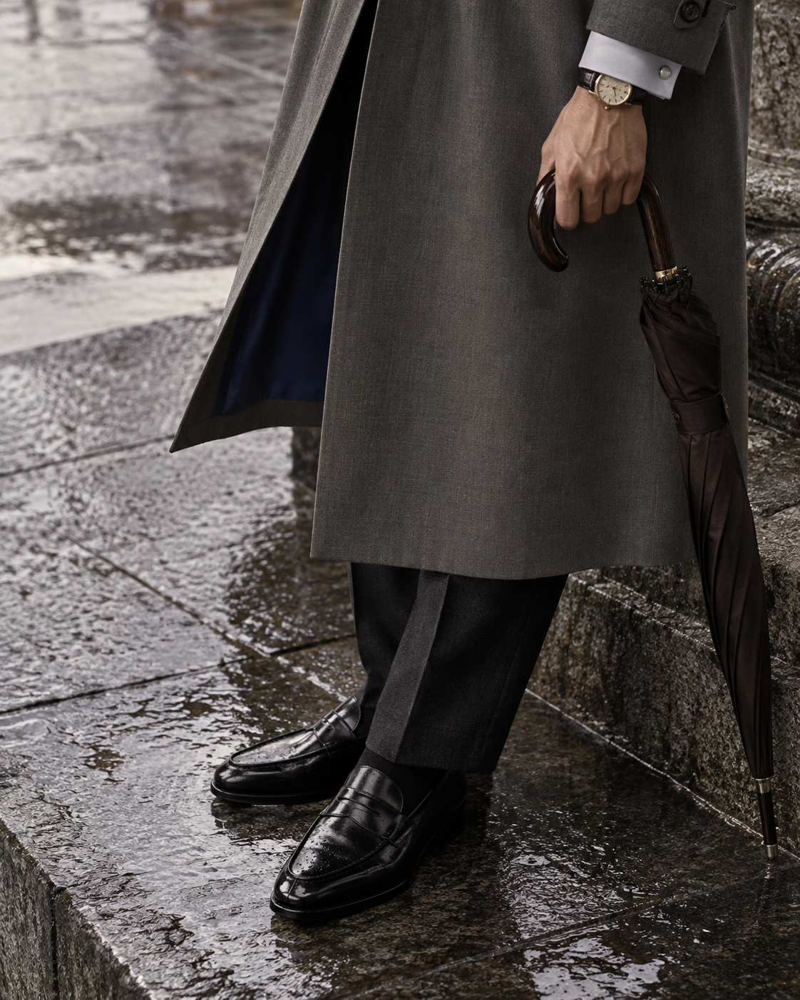
로퍼와 바짓단, 우산, 젖은 돌을 보여주는 제품 디테일입니다. 제품 집중은 좋지만 바닥 반사와 표면이 실제 돌보다 인공적인 패턴에 가까웠습니다.
RL_PurpleLabel_Cut04_AfterRain_original.png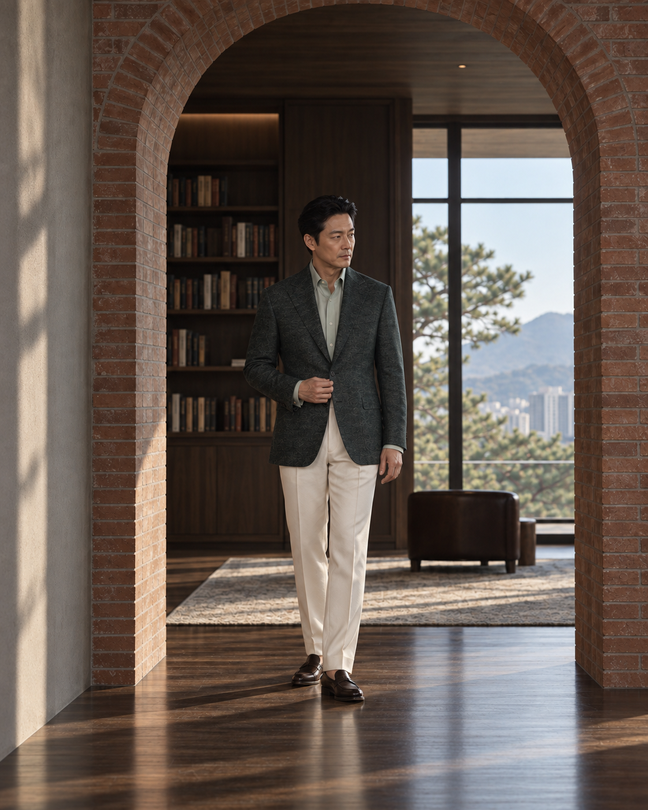
양손 동작을 줄이고 인물을 작게 배치해 여백을 늘렸습니다. 상체는 편해졌지만 두 발이 중심선에 모여 교차된 것처럼 보였습니다.
RL_PurpleLabel_Cut01_QuietCommand_test_v2.png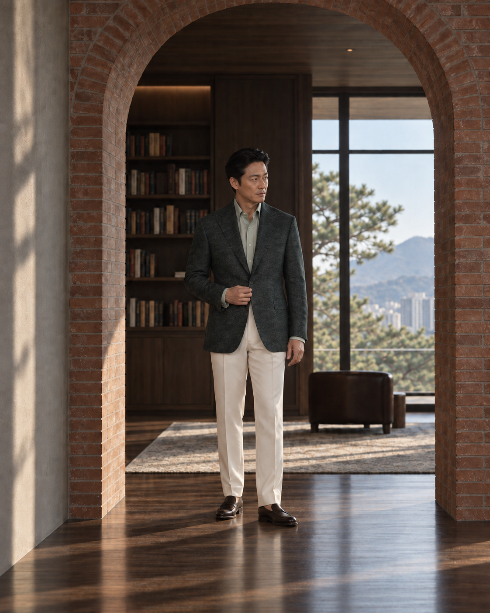
지지발을 골반 아래에 두고 앞발을 옆으로 옮겼습니다. 발의 안정감은 좋아졌지만 전체 장면은 여전히 정적인 광고 포즈에 가깝습니다.
RL_PurpleLabel_Cut01_QuietCommand_test_v3.png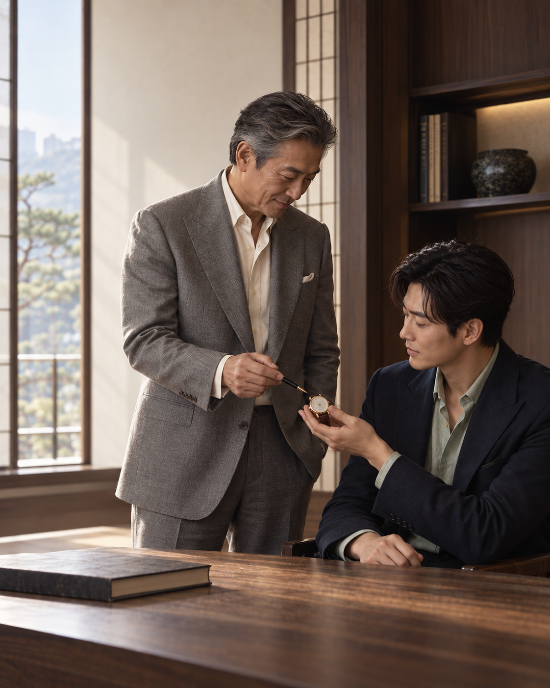
젊은 사람은 시계를 들고, 연장자는 펜으로 각인을 가리키게 역할을 나눴습니다. 손은 좋아졌지만 피부와 빛이 지나치게 부드럽습니다.
RL_PurpleLabel_Cut02_Inheritance_test_v2.png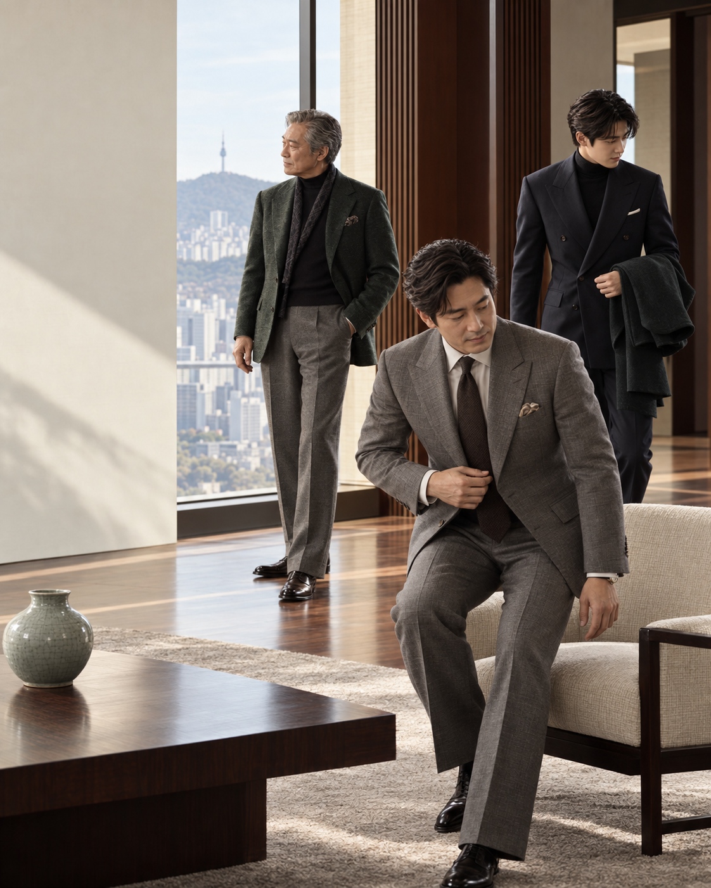
신체 접촉을 없애고 창가에서 돌기, 의자에서 일어나기, 방에 들어오기라는 행동을 나눴습니다. 구도는 좋아졌지만 바닥과 실내가 아직 매끈합니다.
RL_PurpleLabel_Cut03_HouseStandard_test_v2.png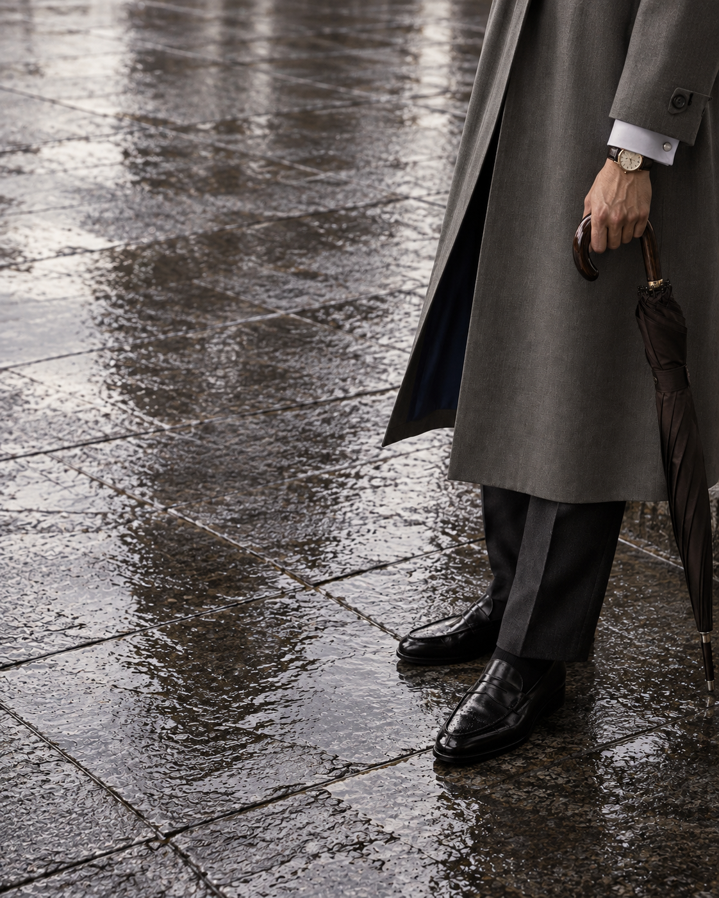
제품을 오른쪽 아래에 두고 왼쪽 위를 비웠습니다. 당시 네 장 중 사진에 가장 가까웠지만 젖은 바닥의 물결이 규칙적으로 반복됩니다.
RL_PurpleLabel_Cut04_AfterRain_test_v2.png
문틀 너머로 우연히 본 듯한 구도와 낡은 집을 적용했습니다. 사진성은 좋아졌지만 S1의 핵심인 세 사람의 도착 장면은 아닙니다.
RL_PurpleLabel_Cut01_Doorway_Candid_test_v4.png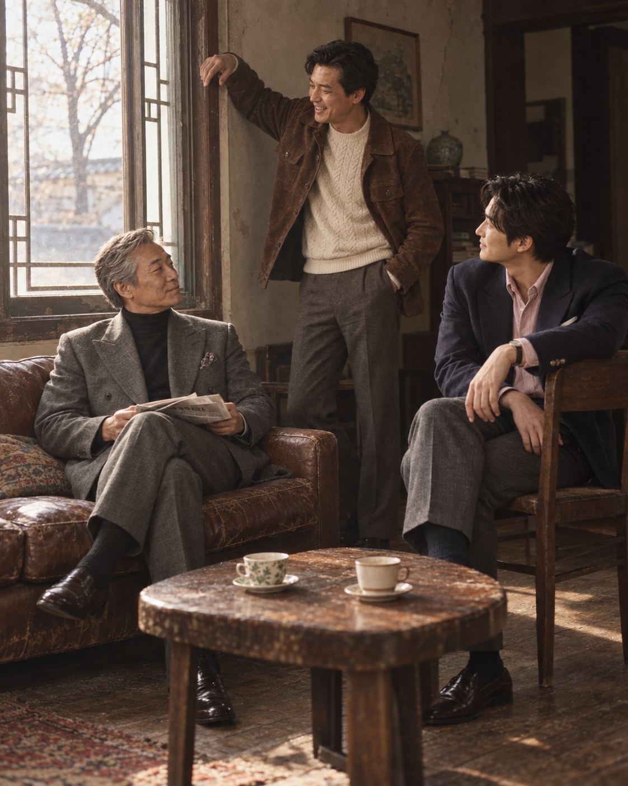
세 사람이 한 대화 안에 있도록 바꿨습니다. 신문의 작은 문자, 서로 비슷한 표정, 방 전체의 균일한 밝기는 다음 검사 항목입니다.
RL_PurpleLabel_Cut03_AfterLunch_Group_test_v3.png
아버지의 손, 소매 결, 아들의 화면 밖 시선이 자연스럽습니다. 현재 가장 강한 GPT 결과이며 중립 흑백과 손 초점만 미세 조정하면 됩니다.
RL_PurpleLabel_Cut02_Sleeve_BW_test_v3.png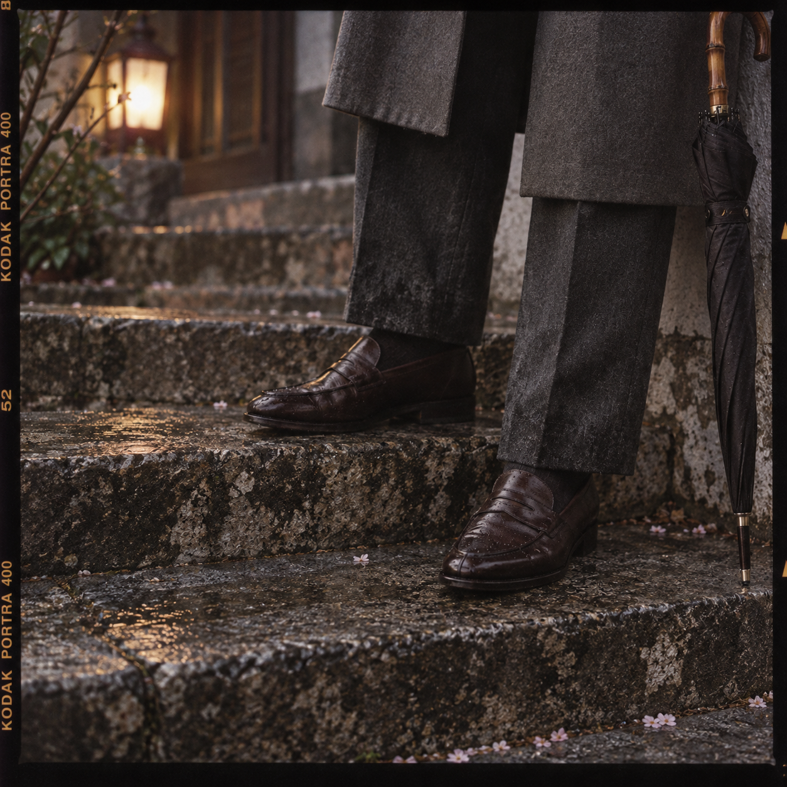
필름 질감은 좋아졌지만 테두리에 읽을 수 있는 필름명이 생겼습니다. 요청하지 않은 문자가 있어 탈락시켰습니다.
RL_PurpleLabel_Cut04_AfterShower_test_v3_rejected_text.png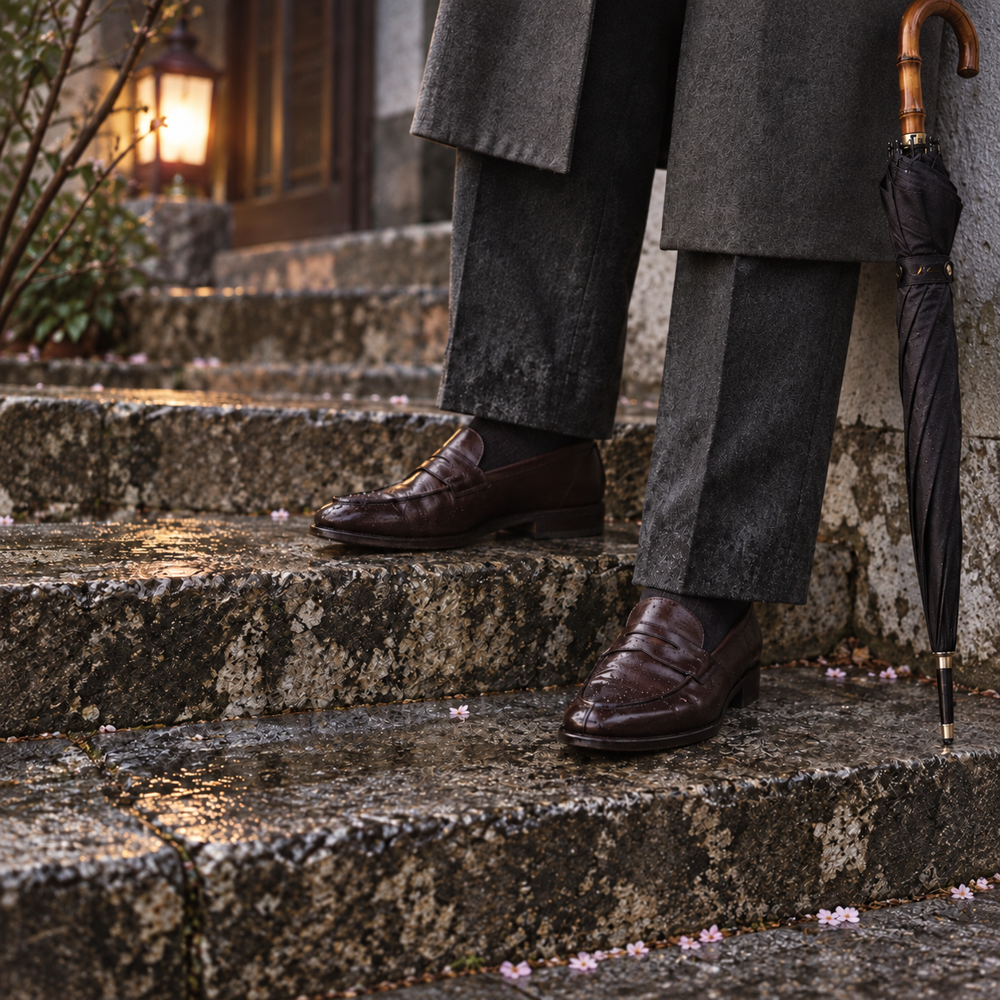
테두리와 문자는 사라졌지만 양발이 서로 다른 단차에 있어 다리의 물리적 연결이 불안정합니다. 바닥의 반복 반점도 부자연스럽습니다.
RL_PurpleLabel_Cut04_AfterShower_test_v4_borderless_pose_fail.png
양발을 같은 평면에 놓고 바닥을 큰 판재로 단순화했습니다. 접지는 나아졌지만 원단 균열과 바닥 질감이 남아 신규 생성이 더 적절합니다.
RL_PurpleLabel_Cut04_AfterShower_test_v5_pose_ground_fixed.pngGEMINI TRACK · 10 UNIQUE IMAGES
권위 중심의 초기 Colonnade와 Dynasty 시리즈, 이후 성북동의 관계 중심 사진으로 전환한 세 장을 함께 봅니다.
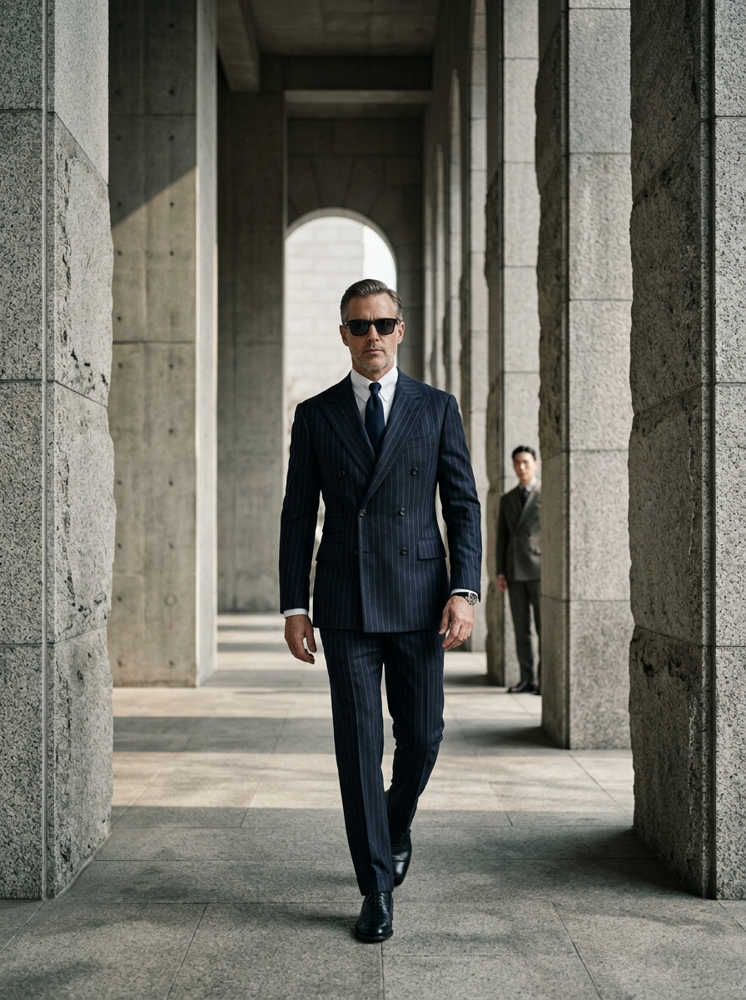
거대한 건축과 정면 시선으로 권위를 만들었습니다. 지금 기준에서는 경호 장면과 영화 포스터처럼 보이고 자연스러운 관계도 없습니다.
RL_PurpleLabel_Spring2027_Korea_Colonnade.jpg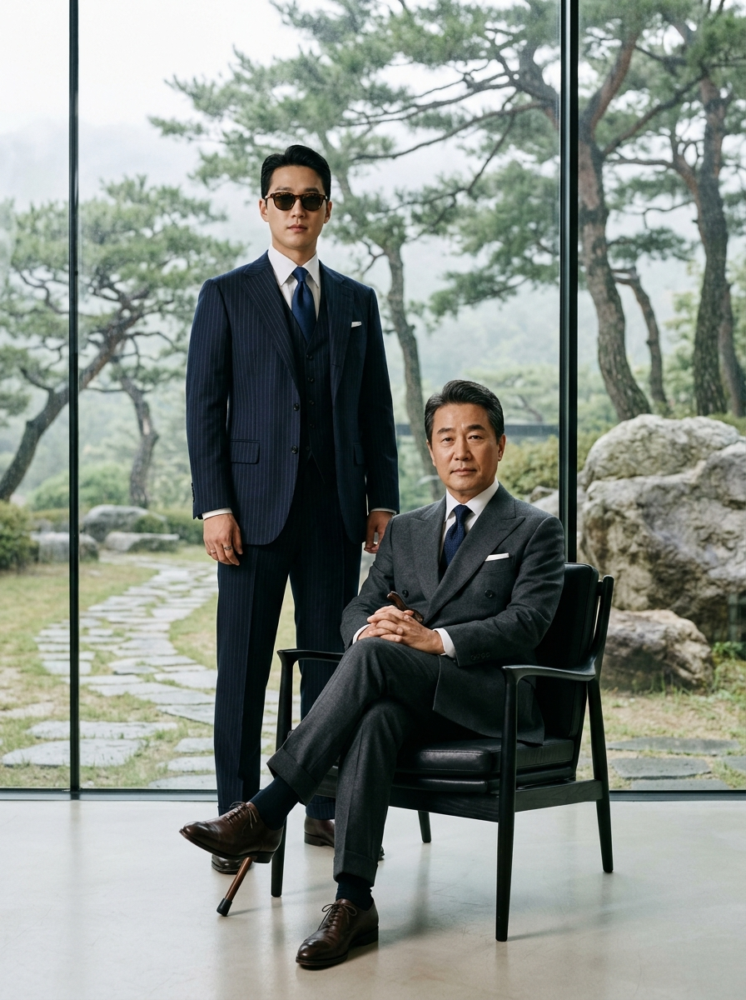
세대 간 계승을 직접 보여주려 한 초기 이미지입니다. 관계가 생활 속 행동보다 의례적인 포즈로 표현됐습니다.
RL_PurpleLabel_Dynasty_Cut1_Succession.jpg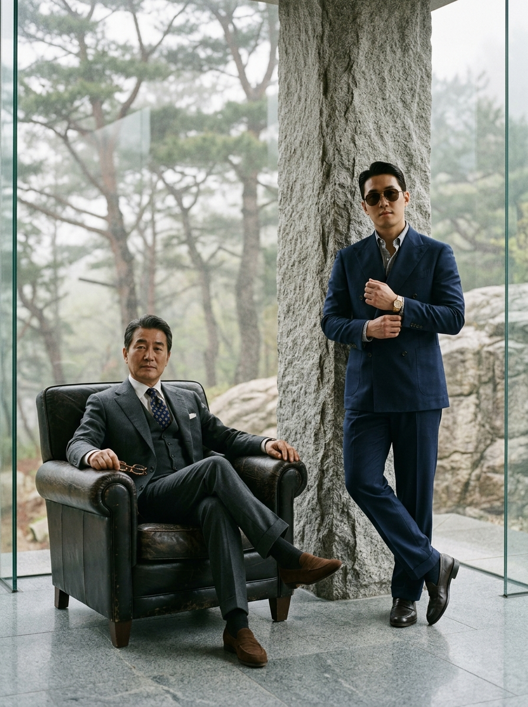
포즈를 완화했지만 두 사람이 서로를 보지 않아 따로 합성된 느낌이 남습니다. 실내 선글라스와 소매 동작도 인위적입니다.
RL_PurpleLabel_Dynasty_Cut1_Succession_v2.jpg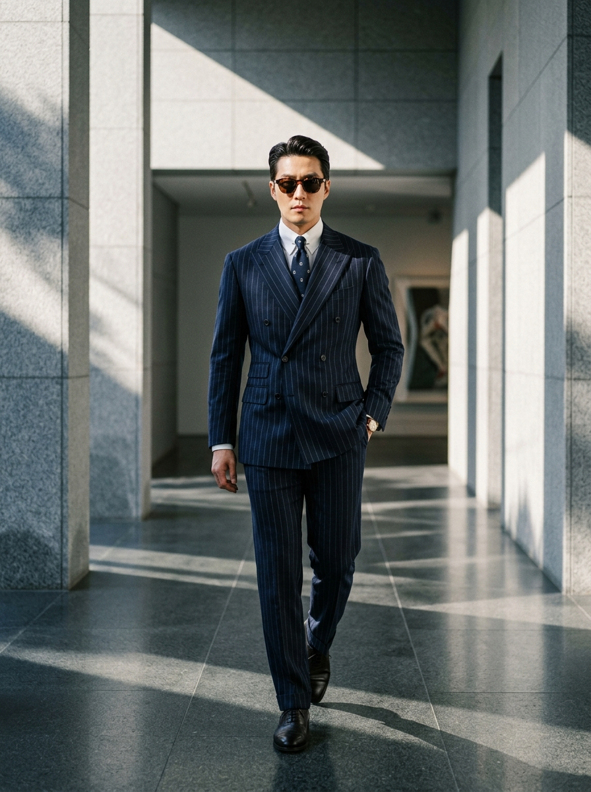
젊은 후계자의 이동과 자신감을 표현하려 했습니다. ‘후계자’라는 설명이 생활 장면보다 인물을 연출된 주인공으로 만들었습니다.
RL_PurpleLabel_Dynasty_Cut2_HeirApparent.jpg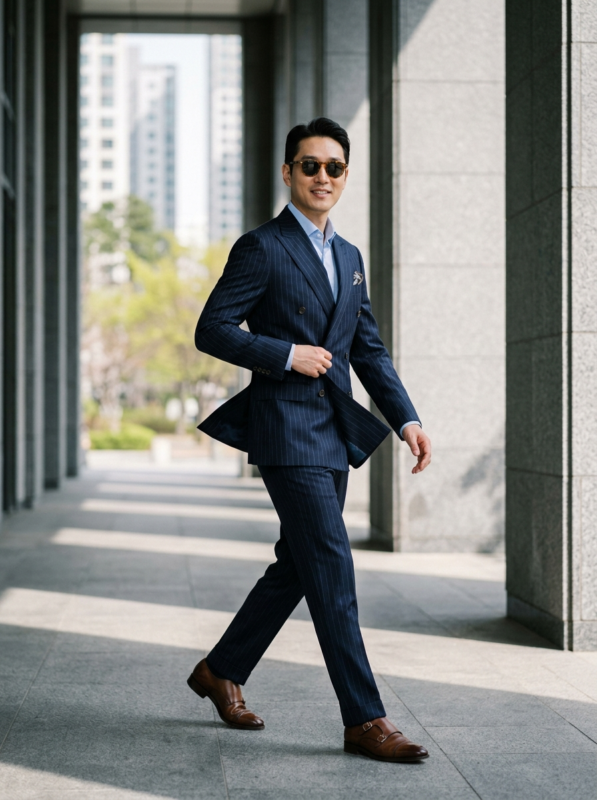
걷는 느낌을 강화했지만 카메라를 보며 웃는 표정이 스톡사진처럼 보이고 재킷 자락의 움직임도 과장됐습니다.
RL_PurpleLabel_Dynasty_Cut2_HeirApparent_v2.jpg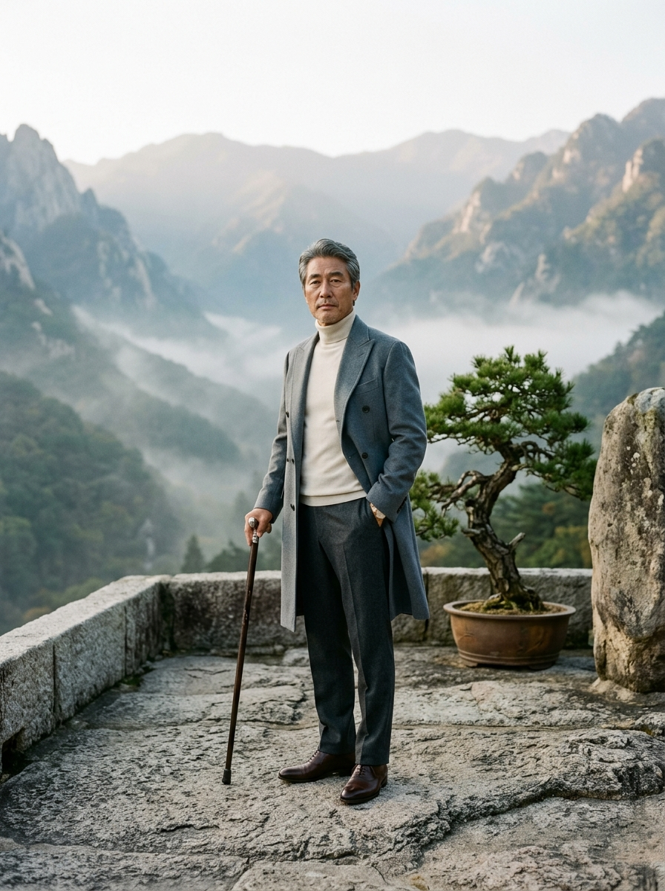
자연과 고독으로 한국적 품격을 표현하려 했습니다. 장소와 인물의 관계보다 풍경의 상징성이 앞섰습니다.
RL_PurpleLabel_Dynasty_Cut3_Solitude.jpg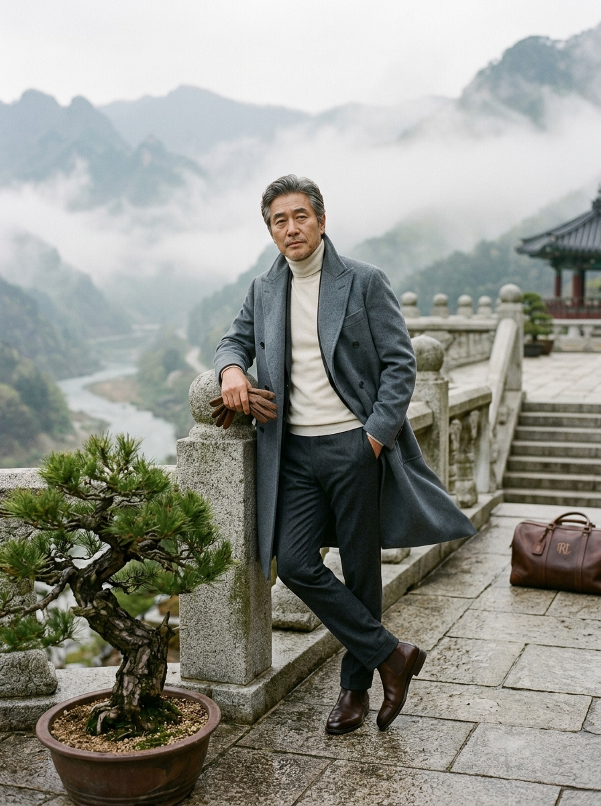
산, 정자, 분재, 가방 등 한국과 럭셔리를 설명하는 기호가 많아졌습니다. 결과가 생활 사진보다 관광 홍보 이미지에 가까워졌습니다.
RL_PurpleLabel_Dynasty_Cut3_Solitude_v2.jpg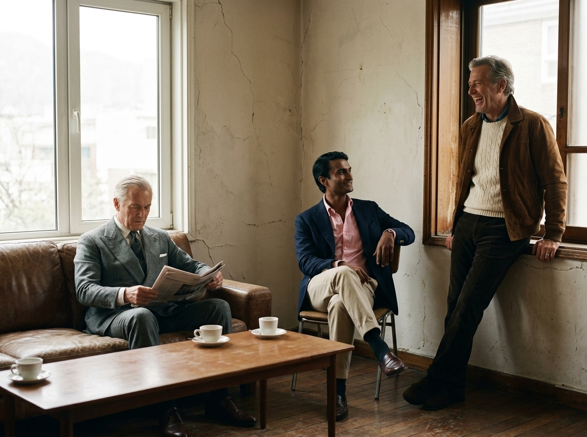
권위 대신 점심 뒤 대화를 중심에 둔 새 방향입니다. 관계는 좋아졌지만 4:3 출력, 작은 문자, 표정 차이와 오른쪽 감광을 확인해야 합니다.
RL_Seongbuk_S2_AfterLunch.jpg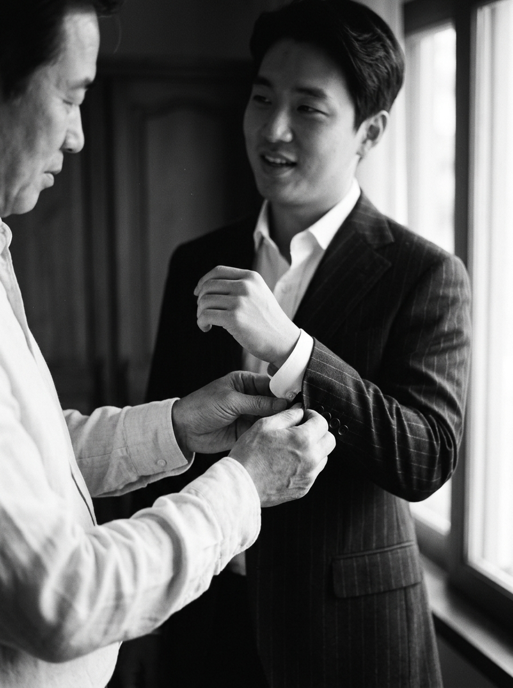
손과 소매에 초점을 둔 흑백 근접 장면입니다. GPT 결과와 같은 기준으로 손의 접촉, 천의 당김, 얼굴의 흐림을 비교합니다.
RL_Seongbuk_S3_Cuff_BW.jpg
멀리서 망원으로 찍은 보행 장면입니다. 이전보다 자연스럽지만 다리의 보행 주기와 팔의 반대 흔들림을 확대해서 확인해야 합니다.
RL_Seongbuk_S5_AlleyWalk.jpg현재 자료는 같은 조건으로 만든 성능 시험이 아닙니다. GPT는 기존 이미지를 여러 번 편집했고, Gemini는 장면별 프롬프트로 새 이미지를 만드는 방식이 중심이었습니다. 그래서 결과 차이를 모델 능력 하나로 설명하면 안 됩니다.
손, 발, 여백처럼 한 문제씩 고치기 좋았습니다. 반면 이전 구도나 표면 오류가 남을 수 있습니다. S6처럼 편집이 누적되면 재질이 더 부자연스러워질 수 있어 새 생성으로 전환해야 합니다.
시간, 렌즈, 빛, 행동을 한 번에 바꾸기 좋았습니다. 이번 표본에서는 과한 미소, 소품 증가, 한국 기호와 로고의 삽입 위험이 보여 인물과 소품 수를 제한해야 했습니다.
| 비교 항목 | GPT | Gemini |
|---|---|---|
| 주된 작업 | 이미지 편집과 국소 수정 | 장면별 신규 생성 |
| 현재 직접 비교 장면 | S2, S3 | S2, S3 |
| 한쪽만 있는 장면 | S1, S6 | S5 |
| 다음 보완 | 구조가 틀리면 편집 중단 후 재생성 | 4:5 고정, 소품 제한, 글자·로고 금지 강화 |
프롬프트는 화려한 광고 문구가 아니라 촬영 메모처럼 씁니다. 공통 블록으로 세계를 고정하고, 장면 블록으로 행동과 카메라를 정합니다. 참조 이미지는 빛, 색, 필름 질감에만 사용합니다.
모든 장면 앞에 붙이는 프로젝트의 기본 조건입니다.
A candid film photograph from a Ralph Lauren Purple Label spring campaign, "A Long Afternoon in Seongbuk". A family and an old friend spend a slow Sunday afternoon in late April at a 1970s house in Seongbuk-dong, Seoul, photographed by a close family friend who never asks anyone to pose. Natural light only, shadows allowed to fall dark. Warm, muted film color: cream, camel, brown, navy, bottle green. Visible film grain, slight halation in the highlights. Clothes look worn in: soft creases at elbows and knees. Avoid: 3D render, CGI, archviz interior, airbrushed skin, symmetrical centered composition, mirror-glossy floors, rim light, HDR, teal-grey grading, stock-photo smiles, posing for the camera, visible logos or text.
뜻: “성북동의 오래된 집에서 자연스럽게 찍은 필름 사진”을 먼저 고정합니다. `luxury`, `cinematic`, `8K` 같은 말을 반복하면 표면이 지나치게 번쩍일 수 있어 촬영 조건과 행동을 구체적으로 적었습니다.
오후 1시. 세 사람의 인사가 시작되기 직전입니다.
Scene: A friend in his mid-forties pushes open the old iron gate, laughing, as the host in his early sixties steps down the garden stairs to shake his hand. The host's son leans in the front doorway behind them, half visible. Shot on a Leica M6, 35mm lens at f/5.6, Kodak Portra 400, Black Pro-Mist 1/8. Full-length, eye level, the gate post blocks the left edge of the frame. Early-afternoon sun, short shadows. Friend: indigo patchwork linen jacket, straw tote. Host: cream crochet knit polo, grey flannel trousers.
판정: 현재 GPT S1은 한 사람만 있어 장면과 맞지 않습니다. 기존 이미지를 고치지 않고 세 인물의 위치부터 다시 만들어야 합니다.
오후 2시. 세 사람이 한 대화 안에 있는 관찰형 그룹 사진입니다.
Scene: After lunch, only coffee cups on the table. The host folds a newspaper on a worn leather sofa; the friend leans on the window frame, laughing hard mid-sentence; the son listens, one arm hooked over the back of his chair. Shot on a Mamiya RZ67, 110mm lens at f/4, Kodak Portra 400, 81A warming filter. Medium-wide group shot from seated eye level, friend on the right third. Afternoon light from a big window on the left; the right side of the room falls dark. Host: grey flannel double-breasted suit. Friend: brown suede jacket over cream cable knit. Son: navy blazer with a faded pink oxford shirt. Cracked plaster walls, scuffed wooden floor.
판정: GPT와 Gemini 결과가 모두 있습니다. 같은 4:5 화면비와 참조 이미지로 다시 생성하면 모델 차이를 가장 공정하게 볼 수 있는 장면입니다.
오후 3시. 얼굴보다 손과 소매가 중요한 흑백 근접 사진입니다.
Scene: By the window, the father buttons his grown son's shirt cuff. The son turns his head, half smiling, talking to someone out of frame. The father's face is cut by the frame edge. Black and white, Kodak Tri-X 400, Nikon F3, 105mm lens wide open at f/2.5: only the hands and cuff are sharp. Close-up cropped at the chest, slightly low angle. One window light from the right; the far side of the faces sinks into shadow. Father: cream linen shirt, sleeves rolled. Son: dark navy chalk-stripe suit, jacket open.
판정: “돌봄”이라는 추상어를 크게 설명하지 않고 단추를 채우는 행동 하나로 보여줍니다. 현재 가장 안정적인 케이스입니다.
오후 4시. 덩굴 사이로 멀리서 지켜본 듯한 장면입니다.
Scene: Two men in wicker chairs in a small garden. The friend sits sideways with his legs crossed; the host leans forward, pointing at something as he talks. Photographed through climbing vines. Shot on a Pentax 67, 105mm lens at f/2.8, Kodak Portra 160, ND filter and 81A. Medium shot at seated eye level; out-of-focus leaves cover a quarter of the frame. 4 pm side light, leaf shadows dappled on faces and clothes. Friend: olive field coat, corduroy trousers, suede boots, a purple crew-neck sweater tied over his shoulders. Host: cream crochet knit, a silver and turquoise cuff bracelet.
판정: 아직 생성하지 않았습니다. 전경의 흐린 잎이 화면 일부를 가려 사진가가 장면에 끼어들지 않은 느낌을 만드는 것이 핵심입니다.
오후 5시. 약 20미터 밖에서 찍은 자연스러운 보행 장면입니다.
Scene: The son and the friend walk down a narrow stone-walled alley. The friend turns back mid-sentence; the son walks with his jacket slung over one shoulder. Shot from about 20 meters away on a Canon EOS-1V with a 135mm lens at f/2.8, Kodak Portra 800, Black Pro-Mist 1/8. Telephoto compression; the two figures take up less than half the frame height; slight motion blur at their feet. 5 pm low side light, long shadows along the wall. Son: navy chalk-stripe double-breasted suit, jacket over shoulder. Friend: camel overcoat, straw tote.
판정: Gemini 후보만 있습니다. 걷는 앞다리와 반대편 팔이 함께 나오는지, 발이 바닥에 실제로 닿는지를 확대해서 봐야 합니다.
오후 6시. 얼굴 없이 신발, 바짓단, 우산과 젖은 돌을 보여줍니다.
Scene: Just after a short spring shower at dusk, on the stone front steps: dark brown penny loafers, the hem of grey flannel trousers slightly damp, the tip of a folded umbrella with a bamboo handle. No face. Shot on a Hasselblad 500C/M, 80mm lens at f/5.6, Kodak Portra 400, circular polarizer cutting the glare on the wet stone. Square crop, below the knee, slightly looking down. Soft overcast light; a warm porch lamp lights one side of the steps. Wet stone looks matte and uneven, not glossy.
판정: v3부터 v5까지 수정했지만 재질 오류가 남았습니다. 같은 이미지를 더 고치기보다 이 장면 프롬프트로 새로 생성하는 편이 낫습니다.
아이엔 프로젝트처럼 결과와 수정 이유를 함께 남깁니다. 중요한 것은 “좋아졌다”는 감상이 아니라 어떤 입력을 바꾸었고 화면에서 무엇이 달라졌는지 기록하는 것입니다.
학생 분석 자료는 브랜드가 어떻게 해석됐는지 보여주고, 사진 조사 자료는 실제 이미지에서 어떤 몸과 빛이 반복되는지 보여줍니다. 두 자료가 다르면 실제 사진을 다시 확인합니다.
좋은 테일러링과 절제된 재료는 유지합니다. 서열은 책임으로, 왕실은 오래 지킨 기준으로 바꿉니다. 한복, 왕좌, 주변화된 한국인, 과한 관광 기호는 배제합니다.
각 이미지를 따로 만들지 않고 오후 1시 도착부터 오후 6시 소나기까지의 시간으로 연결했습니다. 인물과 장소가 반복되어도 빛과 행동이 바뀌어 하나의 이야기로 보입니다.
사람 수, 행동, 촬영 거리, 렌즈, 빛, 옷, 화면비, 금지 조건을 먼저 적습니다. 카메라 이름은 실제 광학을 보장하는 값이 아니라 원하는 거리감과 심도를 설명하는 언어입니다.
공통 블록은 성북동의 집과 필름 사진의 성격을 고정합니다. 장면 블록은 그 시간에 필요한 행동만 추가합니다. 참조 사진은 1~2장만 쓰고 빛, 색, 질감만 참고하게 합니다.
프롬프트, 후보, 선정본, 평가를 모델별로 섞지 않습니다. 그래야 프롬프트 문제인지, 편집 누적 문제인지, 특정 환경의 반복 경향인지 구분할 수 있습니다.
시선, 관계, 체중, 옷 주름, 오래된 공간, 무광 표면, 한 방향의 빛, 비대칭 구도, 피부 결, 문자 부재를 한 장씩 확인합니다. 일곱 항목 미만이면 선정하지 않습니다.
손, 발, 표정, 배경을 동시에 고치면 다른 부분도 바뀝니다. 그래서 하나씩 수정합니다. 구조와 재질 오류가 누적되면 편집을 중단하고 신규 생성으로 전환합니다.
선정본은 현재 후보 중 가장 낫다는 뜻이지 최종 확정이라는 뜻이 아닙니다. S1과 S6은 선정 폴더에 있지만 최신 판정은 재생성입니다.
케이스 페이지에는 한 장면의 목표, 보유 이미지, 수정 내용과 다음 작업을 따로 기록합니다. 아래 상태는 폴더 이름이 아니라 최신 평가를 기준으로 표시했습니다.
GPT 한 장. 사진 질감은 좋지만 세 사람의 도착 장면이 아니므로 새로 생성합니다.
REGENERATES2GPT와 Gemini가 모두 있습니다. 신문 문자, 표정 차이, 측면 감광과 화면비를 맞춰 비교합니다.
COMPARES3GPT와 Gemini가 모두 있습니다. 현재 가장 안정적이며 손과 흑백 톤만 미세 비교합니다.
SELECTABLES4촬영 사양만 있고 결과는 없습니다. 두 모델의 1차 후보가 필요합니다.
PLANNEDS5Gemini 후보 한 장. 보행 해부학을 확인하고 같은 사양의 GPT 결과를 만듭니다.
GEMINI ONLYS6GPT v3부터 v5까지 있습니다. 접지는 개선됐지만 재질 오류 때문에 새로 생성합니다.
REGENERATE과거 보고서의 강한 표현과 현재 검증된 사실을 구분합니다. 이 구분이 있어야 작업 기록이 홍보 문구가 아니라 다음 제작에 실제로 도움이 되는 자료가 됩니다.
공식성: 이 이미지는 Ralph Lauren의 공식 결과물이 아닙니다.
평가: 초기 Gemini 문서의 “결함 0건”, “100% 실현”, “상용 수준”은 당시 작성자의 자체 평가이며 독립 검증 결과가 아닙니다.
모델 비교: 두 모델은 같은 입력과 생성 수로 시험하지 않았기 때문에 현재 결과로 우열을 단정할 수 없습니다.
카메라 정보: 카메라와 필름 이름은 원하는 시각적 성격을 전달하는 촬영 언어이며 실제 광학 재현을 보증하지 않습니다.
참조 이미지: PDF에서 추출한 23장의 개별 촬영자와 이용 권한은 확인되지 않았으므로 내부 연구에만 사용합니다.